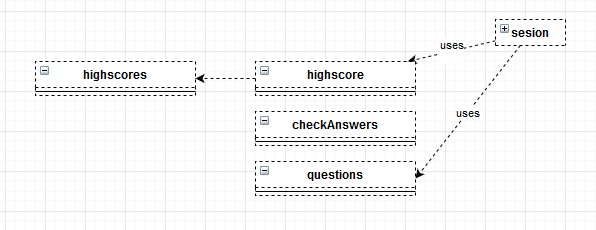
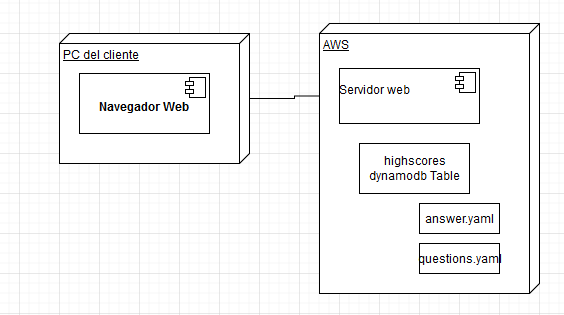

Application Design and Architecture¶ ↑
- Author
-
Leonardo Castillejos Vite (A01375332), Oscar Zuniga Lara (A01654827)
- Date
-
Jun 4, 2021
Here we describe the documentation of a quiz application using microservices, lambda, sinatra and dynamodb.
If you haven’t done so already, install the following gems. At the terminal type:
$ gem install hanna-nouveau $ gem install sinatra $ gem install faraday $ gem install aws-sdk-dynamodb $ gem install time
The directory structure for the application and its documentation is as follows:
taxEvation/
├─ doc/ Folder produced by RDoc.
├─ img/ Folder for the documentation’s image files.
└─ src/ Folder for the application’s source code.
├─ public/ Folder for the server’s public documents.
│ └─ stylesheets/ Folder for the application’s CSS files.
│ └─ boostrap/ Folder for boostrap
├─ models/ Folder for the application’s models.
└─ views/ Folder for the application’s views (ERB files).
The builddocs.sh shell script contains the required instructions to produce the RDoc documentation. Run the script from the taxEvation directory, typing at the terminal:
$ bash builddocs.sh The root of the documentation should now be available at: +taxEvation/doc/index.html+
Use any web browser to see the result.
Installing and Running the Application¶ ↑
Use this section to explain any details on how to install and run you application.
You need to have Ruby 2.6 or better and the Sinatra gem installed in your system to run the taxEvation web application. You also need to have installed the {faraday} [github.com/lostisland/faraday] gem installed in your system to run the taxEvation web application. You also need to have installed the {aws-sdk-dynamodb} [rubygems.org/gems/aws-sdk-dynamodb/versions/1.0.0.rc7] gem installed in your system to run the taxEvation web application. You also need to have installed the {time} gem installed in your system to run the taxEvation web application.
To run the server type the following command at the terminal from the taxEvation/src directory:
$ ruby server.rb
Afterwards, point your web browser the server’s root URL.
4+1 Architectural View Model¶ ↑
Logical View¶ ↑
Our Classes are defines bye the session that every user have every time he connects to our service, it saves all the necessary data and uses the lambda classes highscore, checkAnswers and questions to retrieve data from a dynamodb called highscores. 
Process View¶ ↑
The process our web application will offer two possible starting options, see highscores and starting a quiz, this will ask for user, number of questions, will generate a list of questions, retrieve a question, answer a question, grade a question, ask another question. If there are no more questions it will show a grade and offer to upload your grade or not.

Development View¶ ↑
Our application is formed by 4 parts:
server.rb: is the principal ruby function.
models: it includes all the lambda functions storage: the dynamodb table public: all the graphical utilities. vies: here we have all our view we use to navigate our application

Physical View¶ ↑
Our application is formed physically by 2 parts, the client pc and aws servers. pc client: it only needs a web browser. aws servers: it runs the web server, manages the storage and and necessary lambda functions.

Scenarios¶ ↑
Our application has 3 possible scenarios:
-
see highscores: the user only wants to see the highscores
-
answer quiz and upload grade: the user will answer the quiz and upload the grade.
-
answer quiz and not upload grade: the user will answer the quiz and will not upload the grade.

Patterns Used¶ ↑
We used the following patters:
-
Domain-Specific Language: The
server.rbfile consists of a series of Sinatra routes. Sinatra is a DSL for creating web applications in Ruby. -
Model-View-Controller: The application follows the classical web implementation of the MVC architectural pattern. The models (
.rbfiles) and views (.erbfiles) are stored in the correspondingmodelsbut they are there only for
documentation purposes but they are stored and executed in aws lambda, views directory. The controller is contained in server.rb file.
Acknowledments¶ ↑
BBBootstrap Team (templates used) Fernando Silva (for mental health supporting)
References¶ ↑
-
Fowler. UML Distilled: A Brief Guide to the Standard
ObjectModeling Language, 3rd Edition. Addison-Wesley, 2003.
-
-
Gamma, R. Helm, R. Johnson, J. M. Vlissides. Design Patterns: Elements of Reusable Object-Oriented Software. Addison-Wesley, 1994.
-
-
Olsen. Design Patterns in Ruby. Addison-Wesley, 2007.
-
-
Ruby-Doc.org. RDoc Markup Reference. ruby-doc.org/stdlib-3.0.0/libdoc/rdoc/rdoc/RDoc/Markup.html Accessed May 7, 2021.
-
Ruby For Beginners. (2016). Sessions in Sinatra. 6/3/2021, de webapps-for-beginners Sitio web: webapps-for-beginners.rubymonstas.org/sessions/sinatra_sessions.html
-
Bootstrap. (2021). Heroes · Bootstrap v5.0. 6/3/2021, de Bootstrap Sitio web: getbootstrap.com/docs/5.0/examples/heroes/